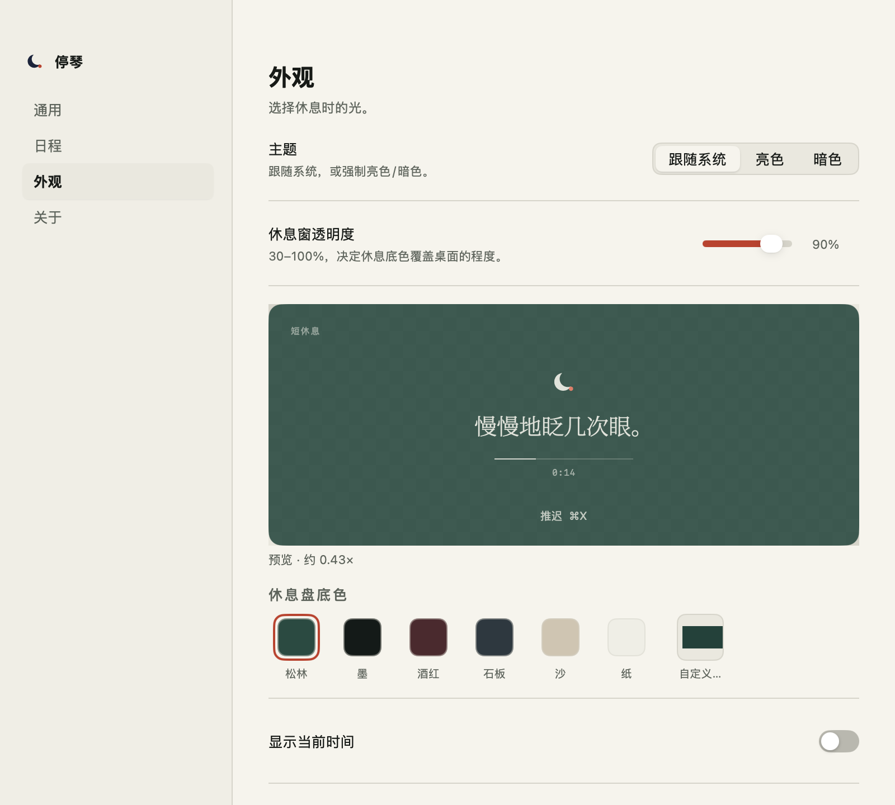

01
是一片颜色，不是弹窗
每块屏幕一个窗口，占 85% 的画面。里面有一枚月牙、一句话、一条进度线，还有一个按钮。
菜单栏 / 托盘里的休息提醒
短休息和长休息都会按时来。到点了，它占住屏幕几分钟，然后悄悄退开。整个应用只有一个进程，图标待在菜单栏或托盘里，也不用 webview。
brew tap gythialy/tap
brew trust gythialy/tap
brew install --cask fermata

Fermata 是乐谱里的延长记号，让一个音比写出来的时值停得更长。乐队等一等，再接着往下走。中文名「停琴」来自谢朓的诗，说的也是停下来的那一刻。图标里的月牙取自诗中的凉月——琴放下了，人就站一会儿。
「停琴伫凉月，灭烛听归鸿」把琴放下，在凉月下站一会儿。吹灭蜡烛，听大雁飞回来。谢朓 《移病还园示亲属诗》
望向窗外，直到眼睛放松。
默认是番茄钟：工作 25 分钟，休息 5 分钟。四次短休息之后，换一次 15 分钟的长休息。时长都能改，但至少留一种。
每块屏幕一个窗口，占 85% 的画面。里面有一枚月牙、一句话、一条进度线，还有一个按钮。
打开严格模式，就不能推迟、跳过，也不能关掉窗口。休息没结束，应用不会退出；锁屏了，这次休息照样算结束。
想停久一点，可以选 30 分钟、1 小时、到明早，或者干脆一直停。你离开电脑、开着专注模式、锁了屏，或者打开了排除列表中的应用，它也会自己暂停。
你在全屏应用里，它最多等一小时；你在打字，最多等 30 秒。等完了，休息还是完整的时长。
设置分通用、日程、外观、关于四页。语言、开机启动、菜单栏样式、休息背景色、声音和排除的应用，都在里面。
一个 Go 进程、一个系统原生图标，不用 webview。闲着时几乎不占 CPU，内存也用得少。



macOS：Homebrew 或 .dmg。Windows：安装器，或者解压就能用的 zip。Linux：.deb、.rpm、带 install.sh 的压缩包，或 PKGBUILD。macOS 版是 ad-hoc 签名，没做公证；Windows 版还没签名，第一次运行时 SmartScreen 会拦一下。
brew tap gythialy/tap
brew trust gythialy/tap
brew install --cask fermata
Windows：fermata-，或者免安装 zip；第一次运行点「更多信息 → 仍要运行」。Linux：.deb、.rpm、带 install.sh 的压缩包，或 PKGBUILD；还需要 GTK 3 和 AppIndicator。
更新：brew upgrade --cask fermata。